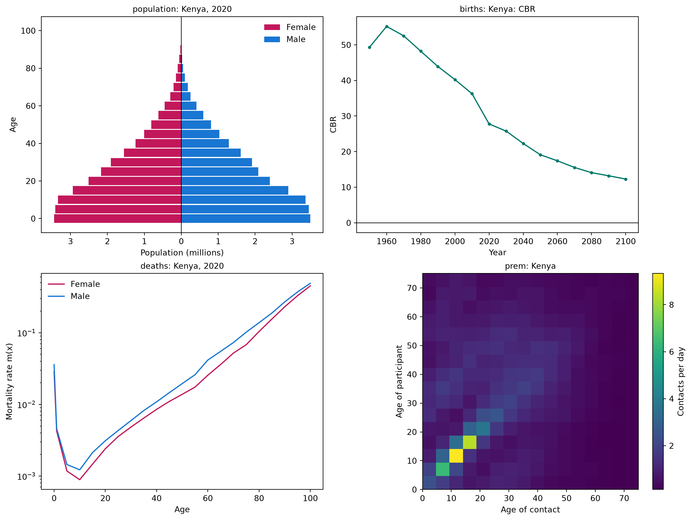
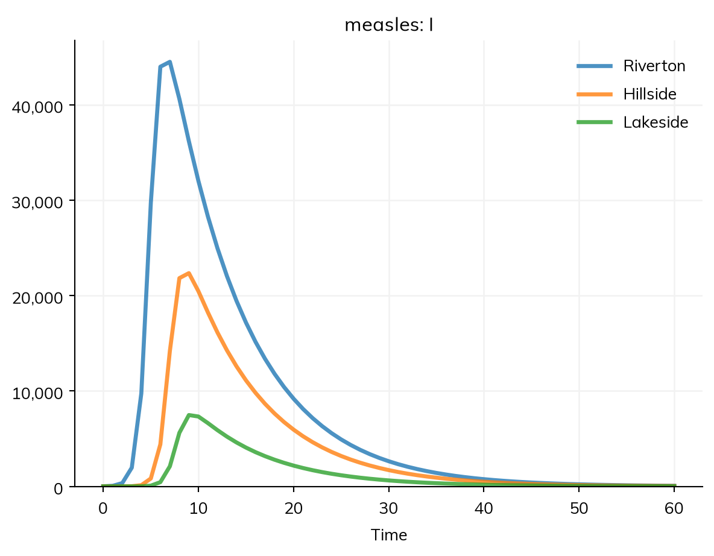
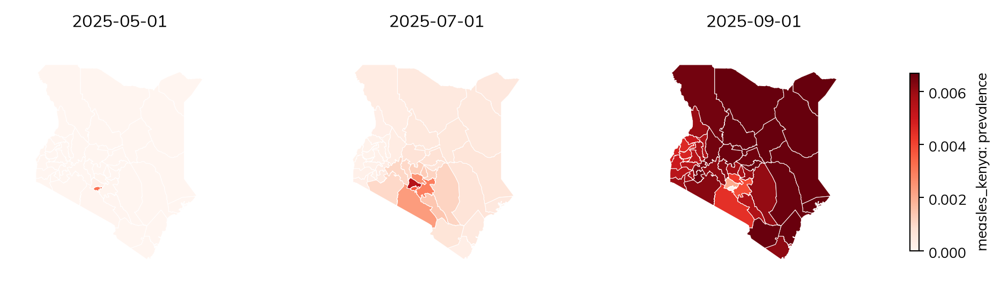
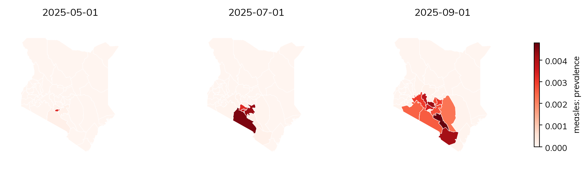

A model of a particular setting needs data about its people and its places: how many people there are and of what ages, how fast they are born and die, who has contact with whom, and where they live. Starsim has these for 187 countries and territories, by name, and takes data of your own in the same forms. This page covers that data, and then places: geographies of towns or of a country’s administrative units, movement between them, and maps of results.
The data by place comes from the package starsim_data: populations by age and sex, rates of birth, death, fertility, and migration, contact matrices, and administrative units (counties, provinces, and states). The common data is bundled; the rest is downloaded on first use and kept (see the appendix). The model objects that use a place take its name, and ss.data gives the data itself:
What
In a model
The data itself
Population by age and sex (UN World Population Prospects)
ss.population() takes a year (from 1950 to 2100), and ss.contacts() a study, e.g. ss.contacts('Japan', study='mistry2021'). A US state is named with its country, ss.population('United States:Massachusetts'). The data is given as tables, with age groups labeled as a stratification labels them ('0-4', '5-9', …) and the source in .attrs['ref'], which describe() also shows:
import starsim as ssbirths = ss.data.rates('Kenya', 'births') # Crude birth rates per 1,000 people, by yearprint(births.head())pop = ss.data.population('Kenya', year=2024) # Women and men by 5-year age groupprint('Population of Kenya in 2024:', round(pop.values.sum()))print('Source:', pop.attrs['ref']['study'])
Time CBR
0 1950 49.337002
1 1960 55.183998
2 1970 52.540001
3 1980 48.210999
4 1990 43.930000
Population of Kenya in 2024: 56571298
Source: UN World Population Prospects
Looking up a place
A place can be named by its name ('Kenya'), its ISO code ('KE' or 'KEN'), its official name, or a common alias ('Czechia'), without regard to case or accents. starsim_data can say what it has for a place, and plot it as a check (an age pyramid, the crude birth rate, death rates by age, and the contact matrix):
import starsim_data as ssdinfo = ssd.location_info('KEN') # The name, codes, aliases, and sources of the contact matricesprint(info.location, info.iso3, info.official_name, '- contact matrices:', info.contact_sources)ssd.plot('Kenya');
Kenya KEN Republic of Kenya - contact matrices: prem2021|prem2017

ssd.list_locations(dataset) lists the places in a dataset, and ssd.list_datasets(detailed=True) the datasets, as in the appendix. ssd.cache_info() lists what has been downloaded.
Data of your own
Data of your own takes the same forms. Ages are a table of counts or fractions by age group, for ss.People(n_agents, age_data=...), and ss.data.age() gives a country’s in that form, to change before use:
ss.data.age_split(edges, ages, counts) gives the fraction of people in each of the model’s age groups from data in other age groups, and ss.data.age_labels(edges) labels groups as Starsim does ('0-14', '15-64', '65+'). Birth and death rates are tables by year (see Data of your own); a contact matrix is an array or a table by age group (see The forms of a matrix); and places are a table of names, populations, and positions (see Geographies). Data on the disease itself (cases, deaths, prevalence) is given to the sim with data= (see Fitting a model).
Places
Towns linked by commuting
A geography (ss.geo.geography) is a set of named places, with the population of each and where they are. Stratifying a disease by it makes a copy of each state for each place, and mobility= says how people move between them (see Movement between places), as stratify(patch=ss.levels(towns, mobility=...)). Here are three towns of measles, with 10 infectious people in Riverton at the start, and people spending 0.1% of their time in the other towns, split between them by a gravity model:
import starsim as sstowns = ss.geo.geography(names= ['Riverton', 'Hillside', 'Lakeside'],populations= [60_000, 30_000, 10_000],x= [0, 20, 50], # Positions in kmy= [0, 0, 10],)S, R = ss.states('S R')I = ss.State('I', infected=True) # Infected: counted in the results infected and prevalenceinfection = S >> I @1.9*I # β = 1.9 per dayrecovery = I >> R @ ss.days(8) # Infectious for 8 days on averagemeasles = ss.Disease(infection, recovery, init_n=dict(I=ss.by(patch=[10, 0, 0]))) # 10 infectious people in Rivertonmeasles.stratify(patch=ss.levels(towns, mobility=ss.geo.gravity(away=0.001)))sim = ss.Sim(measles, stop=ss.days(60))sim.run()sim.results.measles.I.by('patch').plot()
Sim: measles, 100,000 people, as an ODE, days 0 to 60
measles: R0 = 15.2, with 10 infectious at the start
Done in 0.0047 s; measles: 99,990 infections; at most 68,065 infectious, on day 8

library(starsim)towns <- ss$geo$geography(names =c("Riverton", "Hillside", "Lakeside"),populations =c(60000, 30000, 10000),x =c(0, 20, 50), # Positions in kmy =c(0, 0, 10))states("S R")states("I", infected =TRUE) # Infected: counted in the results infected and prevalencemeasles <-Disease(infection =Transition(S, I, rate =1.9* I), # β = 1.9 per dayrecovery =Transition(I, R, dur =days(8)), # Infectious for 8 days on averageinit_n =list(I = ss$by(patch =c(10, 0, 0))) # 10 infectious people in Riverton)measles$stratify(patch = ss$levels(towns, mobility = ss$geo$gravity(away =0.001)))sim <-Sim(measles, stop =days(60))sim$run()sim$results$measles$I$by("patch")$plot()
The sim takes its population from the geography. Without mobility=, people mix only within their own town. Places run under every solver, and so does movement between them, except as agents stepped by events (ss.solvers.abm(step='events')); as agents, each agent has a home place.
Geographies
A geography can be given by hand, read from a file, or looked up by country:
ss.geo.geography(names=['a', 'b'], populations=[10_000, 20_000], x=[0, 30], y=[0, 0]) # Positions in any unit of distancess.geo.geography(names=['a', 'b'], populations=[10_000, 20_000], lat=[-1.3, -0.1], lon=[36.8, 34.8]) # Latitudes and longitudes; distances in kmss.geo.geography('districts.csv') # A table with columns name, pop, and x and y (or lat and lon)ss.geo.geography('districts.shp') # Shapes (.shp, .geojson, or .gpkg, read with geopandas); each place at the center of its shapess.geo.geography('Kenya', level=1) # Kenya's 47 counties, with populations and positionsss.geo.geography(['Kenya', 'Uganda'], level=1) # Several countries, with places named e.g. 'Kenya:Busia'
It also takes distances=, places= (some of a country’s units), level=0 or level=2, and year= (populations for another year than 2020); level 2 needs geopandas (pip install starsim_data[spatial]). Each of a country’s units comes with its population, position, area, and p-code (kenya.codes, e.g. 'KE047' for Nairobi), the standard code for joining surveillance data by unit to the places of a model; the rest is in the appendix.
Here measles starts in Nairobi and spreads across Kenya’s counties, in a population that is 90% immune:
kenya = ss.geo.geography('Kenya', level=1)measles_kenya = ss.Disease(infection, recovery,init=dict(R=0.9), # 90% immune at the startinit_n=dict(I=ss.by(patch={'Nairobi': 10})), # 10 infectious people in Nairobi, and none in the other 46 counties)measles_kenya.stratify(patch=ss.levels(kenya, mobility=ss.geo.gravity(away=0.001)))sim = ss.Sim(measles_kenya, start='2025-01-01', stop='2026-01-01', verbose=0)sim.run()res = sim.results.measles_kenyafor county in ['Nairobi', 'Kiambu', 'Mombasa', 'Turkana']: peak = res.I.select(patch=county).values.argmax()print(county, '- infectious people peak on', res.timevec[peak])
Nairobi - infectious people peak on 2025-06-01
Kiambu - infectious people peak on 2025-07-17
Mombasa - infectious people peak on 2025-09-12
Turkana - infectious people peak on 2025-09-07
Values by place
Anything that can vary by level of a stratification can vary by place, with ss.by(patch=...): a value for each place, in order, or a dict by name. In a starting value (init, init_n, or init_prev), a place left out of a dict starts with 0, while a rate or other parameter by name needs every place; a transmission rate by place is S >> I @ ss.by(patch=[1.9, 1.9, 1.0])*I. Results are by place too: by('patch') splits a result into one column for each place, and select() picks one, e.g. sim.results.measles.I.select(patch='Hillside'). Contact matrices act within each place, so a model can be stratified by age and by place together.
Maps
A result of a model stratified by place can be drawn on a map with the result’s map(). Each place is colored by the result there, and drawn as its shape, if the geography has shapes, or else as a point sized by its population. Here is the outbreak above, on three dates:
Using cached /home/cliffk/.cache/starsim_data/boundaries/UNOCHA-KEN-ADM1.gpkg.zstd (789.495 KB)

Call
What it draws
res.map()
One map of the result’s summary in each place over the run, as summarize() gives it
res.map(n=6)
Six maps, evenly spaced from the start of the outbreak to its end
res.map(t='2025-02-01')
The map on one date, or on each of a list of dates (or times, e.g. t=[15, 25], for a sim without dates)
res.map(animate=True)
An animation, shown in a notebook with controls to play it; elsewhere, a Matplotlib animation
res.map(animate=True, filename='spread.gif')
The same, saved to a file (a GIF, or an MP4, which needs ffmpeg)
res.map(shapes=True)
For a country, its units’ boundaries, downloaded the first time (needs geopandas); a geography read from shapes always draws them
geo.plot()
The places of a geography, with their populations
geo.plot(values=..., label=...)
The places colored by a value for each one, e.g. kenya.plot(values=res.infection.by('patch').summarize()/kenya.populations, label='Fraction infected')
Both take cmap=, vmin= and vmax=, and names= (whether to label the places, by default when there are 15 or fewer). A result of agents is mapped the same way; for the runs of a MultiSim, map one run (res.select(run=0)).
Movement between places
Movement between places makes a metapopulation model: each place mixes within itself (homogeneously, or with a contact matrix) and is linked to the others by movement. Movement is given with the places, as stratify(patch=ss.levels(places, mobility=...)), and has three parts: its shape, its amount, and its kind.
The shape (which places people go to):
ss.geo.gravity(source_power=1, dest_power=1, distance_power=2): movement from place i to place j proportional to popis−1 × popjd / distanceijr, so people go more to bigger and nearer places.
ss.geo.radiation(): the radiation model (Simini et al. 2012), with no parameters to fit: the fraction who go to each place depends on the populations of the places nearer to it.
ss.geo.Mobility(matrix=M): a matrix you already have, with the movement from each place (rows) to each place (columns), e.g. from commuting data; a SciPy sparse array suits many places.
ss.geo.Mobility(matrix=kenya.adjacency): movement only between places that share a border, split evenly between each place’s neighbors (adjacency is there for a country’s units, or given to ss.geo.geography(adjacency=...)): the classic model of spread from district to district.
The amount is away=, the fraction of their time that people spend away from home, split between the other places by the shape (10% if not given, which describe() marks as guessed). scale= instead gives the amount as a constant in the gravity formula, for an amount fitted to data; with it, movement from a small place to a large one can exceed all of people’s time, which Starsim caps with a warning. The amount can be fitted like any other parameter: ss.geo.gravity(away=ss.par(0.01, bounds=[0.001, 0.1])) (see Fitting a model).
The kind is kind=, on the movement model or the matrix; by default it is commuting. The numbers of a matrix mean different things under each kind:
Kind
What it means
Used for
'commute' (default)
People keep their home, and spend a fraction of their time in other places, where they can be infected and infect others
Daily travel to work, school, and markets
'visit'
As for commuting, but visitors can only be infected away from home, and infect nobody there
Short trips; flepiMoP’s form
'migrate'
People move home, at the rates the movement gives (per person per unit time)
Migration and relocation; needs scale= as the rate
'force'
Nobody moves; a fraction of each place’s force of infection goes to the others
LASER’s form
Under commuting, with Tik the fraction of their time that people from place i spend in place k (each row of T sums to 1), the force of infection on people from place i takes the standard form for time spent between places:
ss.geo.gravity(away=0.2) # Commuting, 20% of time awayss.geo.gravity(away=0.2, kind='visit') # Visitingss.geo.gravity(scale=2e-5, kind='migrate') # Migration, at rates from the gravity modelss.geo.radiation(away=0.1, kind='force') # A moving force of infection, as in LASER
Movement between neighbors
Here is the Kenya outbreak above, with the same amount of movement but only between counties that share a border, so that infection spreads as a wave from county to county:
Using cached /home/cliffk/.cache/starsim_data/boundaries/UNOCHA-KEN-ADM1.gpkg.zstd (789.495 KB)

A movement register
A table of moves on given dates (a movement register, such as livestock sales between farms) is ss.geo.register(...), a file name or a DataFrame with columns date, from, to, and n, and optionally states (who can move, or which state people added go into). A row with no from adds people, and one with no to removes them. Here, in the three towns, 100 people move from Riverton to Lakeside on day 5, and 50 people join Hillside:
In an ODE, a tiny fraction of an infected person in a town starts its epidemic growing at once; with agents, a whole person there has to be infected first, which takes longer, and by chance may not happen at all. For whether, or when, an outbreak reaches a small place, use agents or a stochastic solver (see Solvers and backends):
measles_slow = ss.Disease(infection, recovery, init_n=dict(I=ss.by(patch=[10, 0, 0])))measles_slow.stratify(patch=ss.levels(towns, mobility=ss.geo.gravity(away=0.0001)))kw =dict(stop=ss.days(60), verbose=0)for label, sim in {'As an ODE': ss.Sim(measles_slow, **kw), 'As agents': ss.Sim(measles_slow, n_agents=10_000, **kw)}.items(): sim.run() peaks = sim.results.measles_slow.I.by('patch').values.argmax(axis=0)print(label, '- day of the peak in Riverton, Hillside, and Lakeside:', peaks)
As an ODE - day of the peak in Riverton, Hillside, and Lakeside: [ 7 10 11]
As agents - day of the peak in Riverton, Hillside, and Lakeside: [11 18 22]
Pitfalls
A name does not make a place. A stratification is spatial when it is given a geography (patch=towns) or kind='space' (stratify(patch=ss.levels(['a', 'b'], kind='space'))). A list of names alone makes ordinary groups, whose people mix with each other; a stratification named like places (patch, region, district, and so on) given only names says so in a note. describe() gives the kind of each stratification.
Start the outbreak somewhere.init_prev=0.01 infects 1% of people in every place; to start it in one place, give init_n (or init) by place, e.g. init_n=dict(I=ss.by(patch={'Nairobi': 10})).
A movement model needs a geography.ss.geo.gravity() and ss.geo.radiation() work out the movement from the places’ populations and distances, so on a stratification with no geography they raise an error; give a geography, or the movement itself as a matrix.
Check the links. Before trusting a spatial model, seed one place and check that the others stay free of infection with no movement.
LASER: Migration: movement between places in an agent-based model, with gravity and radiation models
Appendix: what a geography has
The attributes of a geography (kenya = ss.geo.geography('Kenya', level=1)), for making maps, movement matrices of your own, or joining data by place:
Attribute
What it is
names
The name of each place, in order: the levels of the stratification
populations
The population of each place (None if not given)
lat, lon
The latitude and longitude of each place, in degrees (for a country’s units, the center of each unit)
x, y
The positions of the places, for a geography given by hand with x= and y=
distances
The distance between each pair of places (in km, from latitudes and longitudes)
adjacency
Whether each pair of places shares a border (for a country’s units at level 1 or below, or as given)
area
The area of each place, in km² (for a country’s units)
codes
The p-code of each place (for a country’s units), e.g. 'KE047'
shapes
The shapes of the places, for a geography read from shapes (None otherwise; res.map(shapes=True) downloads a country’s)
ref
Where a country’s units came from, which describe() shows
len(kenya) is the number of places, and kenya.plot() draws them (see Maps).
Appendix: the data
Every dataset
The datasets of starsim_data, with how each is reached: bundled with the package, fetched (downloaded on first use from the files published with it), or downloaded from the original source (here, the UN), and the number of places each has:
The contact matrices (prem2021, prem2017, prem, mistry2021, and, for US states, mistry2021_us) are the study= of ss.contacts() and ss.data.contacts(). Those of Prem et al. are by 5-year age group, from 0-4 to 75+; those of Mistry et al. by single year of age, from 0 to 84+. Each has the settings 'home', 'school', 'work', and 'community' (layer=), and their sum, 'all'. The administrative units at level 2 and below are not in a dataset of their own: ss.geo.geography(place, level=2) downloads the boundaries (from geoBoundaries or UN OCHA) and the populations. indicators and life_table are the UN’s other tables, which ssd.download(place, which='life_table') gives.
Every place and its data
Every place that has data, with its ISO code, the contact matrices it has, and its number of first-level administrative units (blank where there are none bundled). Every place listed has the UN’s population, birth, death, fertility, and migration data:
import pandas as pdplaces = ssd.list_all_locations()sources = ['prem2021', 'prem2017', 'mistry2021']has = {source: set(ssd.list_locations(source)) for source in sources}with_units =set(ssd.list_locations('nodes'))un_data =all(set(ssd.list_locations(ds)) ==set(places) for ds in ['population', 'births', 'deaths', 'fertility', 'migration'])print('Every place has all the UN data:', un_data)rows = []for place in places: row =dict(place=place.replace('_', ' '), code=ssd.location_info(place).iso3) row['contact matrices'] =', '.join(source for source in sources if place in has[source]) row['level-1 units'] =len(ssd.load_nodes(place, level=1)) if place in with_units elseNone rows.append(row)table = pd.DataFrame(rows).set_index('place')table['level-1 units'] = table['level-1 units'].astype('Int64')print(len(table), 'places')
Every place has all the UN data: True
187 places
NoteThe table of places
pd.set_option('display.max_rows', 250)table
code
contact matrices
level-1 units
place
Afghanistan
AFG
prem2021
34
Albania
ALB
prem2021, prem2017
12
Algeria
DZA
prem2021, prem2017
48
Andorra
AND
prem2017
7
Angola
AGO
prem2021
18
Antigua and Barbuda
ATG
prem2017
8
Argentina
ARG
prem2021, prem2017
23
Armenia
ARM
prem2021, prem2017
11
Australia
AUS
prem2017, mistry2021
9
Austria
AUT
prem2021, prem2017, mistry2021
9
Azerbaijan
AZE
prem2021, prem2017
74
Bahamas
BHS
prem2021, prem2017
32
Bahrain
BHR
prem2021, prem2017
4
Bangladesh
BGD
prem2021, prem2017
8
Barbados
BRB
prem2021
11
Belarus
BLR
prem2021, prem2017
7
Belgium
BEL
prem2021, prem2017
3
Belize
BLZ
prem2021, prem2017
6
Benin
BEN
prem2021, prem2017
12
Bhutan
BTN
prem2021, prem2017
20
Bolivia
BOL
prem2021, prem2017
9
Bosnia and Herzegovina
BIH
prem2021, prem2017
3
Botswana
BWA
prem2021, prem2017
10
Brazil
BRA
prem2021, prem2017
27
Brunei
BRN
prem2021, prem2017
4
Bulgaria
BGR
prem2021, prem2017, mistry2021
28
Burkina Faso
BFA
prem2021, prem2017
17
Burundi
BDI
prem2021
18
Cabo Verde
CPV
prem2021, prem2017
22
Cambodia
KHM
prem2021, prem2017
25
Cameroon
CMR
prem2021, prem2017
10
Canada
CAN
prem2021, prem2017, mistry2021
13
Central African Republic
CAF
prem2021
20
Chad
TCD
prem2021
23
Chile
CHL
prem2021, prem2017
16
China
CHN
prem2021, prem2017, mistry2021
33
Colombia
COL
prem2021, prem2017
32
Comoros
COM
prem2021
3
Congo
COG
prem2021, prem2017
12
Costa Rica
CRI
prem2021, prem2017
7
Cote dIvoire
CIV
prem2021
33
Croatia
HRV
prem2021, prem2017
21
Cuba
CUB
prem2021
16
Cyprus
CYP
prem2021, prem2017, mistry2021
6
Czech Republic
CZE
prem2021, prem2017, mistry2021
14
Democratic Republic of the Congo
COD
prem2021
26
Denmark
DNK
prem2021, prem2017, mistry2021
5
Djibouti
DJI
prem2021
6
Dominican Republic
DOM
prem2021, prem2017
10
Ecuador
ECU
prem2021, prem2017
25
Egypt
EGY
prem2021, prem2017
27
El Salvador
SLV
prem2021, prem2017
14
Equatorial Guinea
GNQ
prem2021
7
Eritrea
ERI
prem2021
6
Estonia
EST
prem2021, prem2017, mistry2021
15
Eswatini
SWZ
prem2021
4
Ethiopia
ETH
prem2021, prem2017
13
Fiji
FJI
prem2021, prem2017
4
Finland
FIN
prem2021, prem2017, mistry2021
19
France
FRA
prem2021, prem2017, mistry2021
13
Gabon
GAB
prem2021
9
Gambia
GMB
prem2021
8
Georgia
GEO
prem2021, prem2017
13
Germany
DEU
prem2021, prem2017, mistry2021
16
Ghana
GHA
prem2021, prem2017
16
Greece
GRC
prem2021, prem2017, mistry2021
8
Guatemala
GTM
prem2021, prem2017
22
Guinea
GIN
prem2021, prem2017
8
Guinea-Bissau
GNB
prem2021
9
Guyana
GUY
prem2021, prem2017
10
Haiti
HTI
prem2017
10
Honduras
HND
prem2021, prem2017
18
Hong Kong
HKG
prem2021, prem2017
<NA>
Hungary
HUN
prem2021, prem2017, mistry2021
20
Iceland
ISL
prem2021, prem2017
8
India
IND
prem2021, prem2017, mistry2021
36
Indonesia
IDN
prem2021, prem2017
34
Iran
IRN
prem2021, prem2017
31
Iraq
IRQ
prem2021, prem2017
18
Ireland
IRL
prem2021, prem2017, mistry2021
4
Israel
ISR
prem2021, prem2017, mistry2021
6
Italy
ITA
prem2021, prem2017, mistry2021
5
Jamaica
JAM
prem2021, prem2017
14
Japan
JPN
prem2017, mistry2021
47
Jordan
JOR
prem2021, prem2017
12
Kazakhstan
KAZ
prem2021, prem2017
16
Kenya
KEN
prem2021, prem2017
47
Kiribati
KIR
prem2017
3
Kuwait
KWT
prem2021, prem2017
6
Kyrgyzstan
KGZ
prem2021, prem2017
9
Laos
LAO
prem2021, prem2017
18
Latvia
LVA
prem2021, prem2017, mistry2021
43
Lebanon
LBN
prem2017
8
Lesotho
LSO
prem2021, prem2017
10
Liberia
LBR
prem2021, prem2017
15
Libya
LBY
prem2021
3
Lithuania
LTU
prem2021, prem2017, mistry2021
10
Luxembourg
LUX
prem2021, prem2017, mistry2021
12
Macao
MAC
prem2021
<NA>
Madagascar
MDG
prem2021
22
Malawi
MWI
prem2021
3
Malaysia
MYS
prem2021, prem2017
16
Maldives
MDV
prem2021, prem2017
21
Mali
MLI
prem2021
20
Malta
MLT
prem2021, prem2017
68
Mauritania
MRT
prem2021, prem2017
15
Mauritius
MUS
prem2021, prem2017
12
Mexico
MEX
prem2021, prem2017
32
Moldova
MDA
prem2021
37
Monaco
MCO
prem2017
1
Mongolia
MNG
prem2021, prem2017
22
Montenegro
MNE
prem2021, prem2017
23
Morocco
MAR
prem2021, prem2017
10
Mozambique
MOZ
prem2021, prem2017
11
Myanmar
MMR
prem2021
18
Namibia
NAM
prem2021, prem2017
14
Nepal
NPL
prem2021, prem2017
7
Netherlands
NLD
prem2021, prem2017, mistry2021
12
New Zealand
NZL
prem2021, prem2017
17
Nicaragua
NIC
prem2021, prem2017
17
Niger
NER
prem2021, prem2017
8
Nigeria
NGA
prem2021, prem2017
37
North Korea
PRK
prem2021
11
North Macedonia
MKD
prem2021, prem2017
8
Norway
NOR
prem2021, mistry2021
11
Oman
OMN
prem2021, prem2017
11
Pakistan
PAK
prem2021, prem2017
5
Palestine
PSE
prem2021
2
Panama
PAN
prem2021, prem2017
13
Papua New Guinea
PNG
prem2021
22
Paraguay
PRY
prem2021, prem2017
18
Peru
PER
prem2021, prem2017
25
Philippines
PHL
prem2021, prem2017
17
Poland
POL
prem2021, prem2017
16
Portugal
PRT
prem2021, prem2017, mistry2021
20
Puerto Rico
PRI
prem2021, mistry2021
<NA>
Qatar
QAT
prem2021, prem2017
8
Romania
ROU
prem2021, prem2017, mistry2021
8
Russia
RUS
prem2021, prem2017, mistry2021
83
Rwanda
RWA
prem2021, prem2017
5
Saint Lucia
LCA
prem2021, prem2017
10
Saint Vincent and the Grenadines
VCT
prem2021
6
Samoa
WSM
prem2021, prem2017
11
Sao Tome and Principe
STP
prem2021, prem2017
2
Saudi Arabia
SAU
prem2021, prem2017
13
Senegal
SEN
prem2021, prem2017
14
Serbia
SRB
prem2021, prem2017
25
Seychelles
SYC
prem2017
26
Sierra Leone
SLE
prem2021, prem2017
5
Singapore
SGP
prem2021, prem2017
5
Slovakia
SVK
prem2021, prem2017, mistry2021
8
Slovenia
SVN
prem2021, prem2017, mistry2021
2
Solomon Islands
SLB
prem2021, prem2017
10
South Africa
ZAF
prem2021, prem2017, mistry2021
9
South Korea
KOR
prem2021, prem2017
17
South Sudan
SSD
prem2021
10
Spain
ESP
prem2021, prem2017, mistry2021
19
Sri Lanka
LKA
prem2021, prem2017
9
Sudan
SDN
prem2021
18
Suriname
SUR
prem2021, prem2017
10
Sweden
SWE
prem2021, prem2017, mistry2021
21
Switzerland
CHE
prem2021, prem2017, mistry2021
26
Syrian Arab Republic
SYR
prem2021, prem2017
14
Taiwan
TWN
prem2017
22
Tajikistan
TJK
prem2021, prem2017
5
Tanzania
TZA
prem2021, prem2017
30
Thailand
THA
prem2021, prem2017
77
Timor-Leste
TLS
prem2021, prem2017
13
Togo
TGO
prem2021
5
Tonga
TON
prem2021, prem2017
5
Trinidad and Tobago
TTO
prem2021
14
Tunisia
TUN
prem2021, prem2017
6
Turkey
TUR
prem2021, prem2017
81
Turkmenistan
TKM
prem2021
5
Uganda
UGA
prem2021, prem2017
4
Ukraine
UKR
prem2021, prem2017
27
United Arab Emirates
ARE
prem2021, prem2017
7
United Kingdom
GBR
prem2021, prem2017, mistry2021
4
United States
USA
prem2021, prem2017, mistry2021
56
Uruguay
URY
prem2021, prem2017
19
Uzbekistan
UZB
prem2021, prem2017
14
Vanuatu
VUT
prem2021, prem2017
6
Venezuela
VEN
prem2021, prem2017
24
Vietnam
VNM
prem2021, prem2017
34
Yemen
YEM
prem2021, prem2017
22
Zambia
ZMB
prem2021, prem2017
10
Zimbabwe
ZWE
prem2021, prem2017
10
US states are named with their country, e.g. 'United States:Massachusetts', and have their own populations (from the US Census) and contact matrices (Mistry et al.); ssd.list_locations('population_us') lists them.